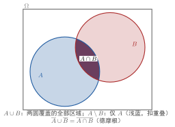

随机事件的关系与运算
一句话定义
随机事件的关系与运算，是在同一个样本空间 上，用集合的包含、相等、并、交、差、补等运算把事件连接、组合出新事件的规则，把事件语言翻译成集合运算。
定性
把事件当成”积木”，运算是”接法”。“出偶数”和”出大于 3”两个事件，能不能拼成新问题？能——“出偶数或大于 3”、“出偶数且大于 3”、“不出偶数”。这三句话，正是把”或""且""非”翻译成集合的 、、补。事件的关系与运算干的就是这碗饭：把人类口水话的连接词，换成数学里一套干净、无歧义的集合规则。
它像一套”事件电路图”。你手上有若干开关（事件），想表达”任一开就亮”（并）、“全开才亮”（交）、“反过来不亮”（补）、“两个互斥但必亮一个”（对立）。这套运算是把复杂局面拆成简单开关，再按逻辑接线。写概率的地方，几乎全在靠它把”和、或、否、互斥”这些词变成可计算的式子。
它在知识体系里的位置：事件运算是概率公式的扳手。概率加法公式 、乘法公式、全概率公式、贝叶斯公式，全部建立在”能用这些运算把事件拆开重组”的基础上。没有这套运算，事件只是一个个孤立的子集，复杂问题无从谈起。
这里有个要反复咂摸的反直觉点：“或”和”且”在数学里比口语更宽、也更绝对。口语说”A 或 B”，常被理解为”二选一”；但集合的 是”至少有一个”，A、B 同时成立也算。这一”宽”，往往让人在算概率时少算了一块——以为互斥，其实重叠。把口语的模糊，全部交给集合的精确，正是这套运算存在的意义。

图：同一样本空间 （矩形）中两事件 、 的韦恩图。蓝色圆 、红色圆 交叠； 是交叠区（且）， 是两圆覆盖的全部区域（或）， 是只属 不含 的部分（差）。补集与德摩根律可由 减圆得出。
数学表达
设 ，事件关系与运算定义为（左为集合式，右为口语含义）：
符号必须逐一对上： 是”并”，（常简写为并列如 ）是”交”； 是补，也叫”对立事件”； 是差。一个关键区分：互斥（，不能同发）与对立（，不仅要互斥，还要并成 、必有一个发生）级别不同，互斥未必对立，对立必互斥。
德摩根律的意义在结构上很重要：它把一个”否定整体”的话（“不是（A 或 B）“）翻译成”分别否定再把并且起来”（“非 A 且非 B”）。这使复杂的否定句能被拆开，是化简事件表达式的利器。
关键性质
-
事件运算满足集合的全部等式律。 为什么——事件本质是 的子集，子集天然满足交换律、结合律、分配律、对偶律等集合代数规则。于是”且""或”可以像普通数的加减一样重新搭配、化简。这是这套运算好用的根源。
-
互斥与对立不是一回事。 为什么——互斥只要”不能同发”（），但可以两者都不发生；对立则进一步要求”必然发生其一”（）。互斥是对立的必要不充分。搞混这一条，加法公式会用错。
-
德摩根律提供”否定”的转化。 为什么——“非”与”或/且”叠加时，可来回翻： 与 。它让”都不是""不全有”这类句能拆成简单事件，是化简概率表达式的关键。
-
运算的结果仍是同一 下的事件。 为什么——对 的子集做并、交、补、差， 仍然是其全集，结果仍是 的子集。正是这种”封闭性”，保证了事件可以由运算任意组合、仍然合法，概率论可以放心地一组一组拼。
推导
现在把最实用的一条——德摩根律——亲手推出来，看清它为什么成立，而不是背公式。
先抛一个问题：“明天不下雨且不下雪”，和”明天不（下雨或下雪）“是不是一回事？若把”下雨""下雪”当作事件 、，这正是问 与 是否相等。我们要证明它们相等。
设物理（数学）场景。设样本空间 是逻辑上所有可能的天气组合；=“下雨”，=“下雪”。一个”可能情况”就是 中一个结果 。用” 是否属于某集合”来判定语句成立与否。
列依据。依据是集合论的判定标准：两个集合相等，当且仅当任意元素属于其一则必属于另一（互为子集）。我们只需证明”对任意结果 ， 当且仅当 ”。
逐步演绎。取任意 。（1） 的意思是” 不在 里”，即” 既不属 也不属 ”。（2）而”不属 “即 ，“不属 “即 ；两者同时成立，即 。（3）以上每一步都是可逆的”当且仅当”，所以两个集合互为子集，从而相等。每一步的依据都是直接用”属于/不属于”的定义逐层展开，没有跳步。
回头看。结论可靠：。它的洞见在于——“否定一个整体”可以等价地拆成”逐项否定再相交”。这让你在处理”不（……）”这类复句时，可以把它化成对单个事件的否定，进而用单个事件的概率去算，这是概率计算里极常用的化归。另一条 同理可证。
为什么重要
事件运算之所以不可或缺，在于它是所有概率公式的底层机械。加法和乘法公式、全概率、贝叶斯，无一不在靠它把”多个事件的关系”翻译成可计算的式子；缺少它，复杂事件只能靠直觉数，既粗糙又易错。
它的地位与后果很具体：读题能不能化归,决定你会不会做概率题。很多难题的”题眼”，就是把”至少有一个”化成并、“同时”化成交、“都不”化成德摩根、“必有一个不可同发”化成对立。熟练掌握这套运算，等于把翻译器装进脑子，任何描述性概率问题都能先转成集合式子，再交给公式。工程上的风险事件拆解（一个系统故障 = 若干子事件并交）、质量控制的”或/且/非”组合，全都靠这套运算落地。不会事件运算，概率只是死记公式；会了它，概率才真正可用。
适用条件
运用事件运算，须满足三条前提：
-
各事件必须属于同一 。 只有同在一个样本空间下，子集才能彼此并、交、补、差。分属不同 的事件（如”骰子的偶数”与”天是否下雨”），不能直接做并交。这是运算合法性的铁律。
-
交集/并集要正确反映”同时/至少”。 算概率时，“且”用交、“或”用并，符号要对应。把”或”误当”且”、把”互斥”误当”对立”，都会直接导致加/乘法公式用错。
-
补集与差集要分清。 是”非 “（在 内补）， 是” 且非 “。二者不是一回事，尤其在 不包含于 时。
真实边界：事件运算处理的是事件之间的关系，不直接给出概率数值。它把事件组合好之后，还需配合概率的公理与公式（加法、条件概率、独立性）才能算出数来。运算只是”几何/逻辑”层面，概率是”数值”层面，二者衔接处正是概率公式的用武之地。
边界与误区
最易出错的，是互斥与对立、或与且两组混淆。逐个挖根因。
-
误区一：互斥=对立。 根因：两者都含”不能同发”的血缘，下意识画等号。正确区别：互斥（）只要求不重叠，允许”两者都不发生”；对立（）还要求并满 、必发生其一。对立比互斥苛刻得多：“掷出偶数”与”掷出奇数”互斥且对立（必有一个）；“掷出 1”与”掷出 2”只互斥不对立（还会掷出 3）。搞混会让加法公式多算或少算。
-
误区二：把口语”或”当二选一。 根因：普通话”或”常有”择一”意味。正确区别：集合的 是”至少一个”，A、B 同时发生也算。看”掷出偶数 或 大于3”（），，其中 4、6 同时属两者——“或”把它们统统算进，一个不落。
-
误区三：把”某事件不成立”当”对立事件的概率为 0”。 根因：以为”不成立”就省事。正确区别：“不成立”是补事件发生，其概率可为各种值；只有不可能事件（空集）概率才是 0。对立事件 通常概率不为 0，要用 去算，不能想当然归零。
对照
最容易和”对立”混的是互斥。两者只用一个关键差异就能分开：
互斥是不能同发，对立是必有一个发生。
互斥 ：二者永不重叠，但可以都落空（掷出 3 时，“出1”和”出2”都没发生）。对立 ：不只互斥，还非要 ，即两者必有一个发生。判断一句话：这两个事”能不能同时不发生”——能，则是互斥（可能对立也可能不）；不能，则必是对立。对立是互斥的”超集特例”，要求更严。
例子
我们用手推一个完整例子，把四种运算都算一遍。
掷骰子，。取 “偶数”，“不小于 4”。逐一求：
- 并 ：掷出其中任一个都算”偶 或 不小于4”。 把两集合的成员合并，含 4、6 这两个同时在两者内的点。
- 交 ：只有掷出 4 或 6 才”同时满足偶数且不小于4”。
- 差 ：偶数里拿掉不小于 4 的，只剩 2（“偶数但小于4”）。
- 补 ：非偶数，即奇数。
- 互斥 vs 对立：设 “出 6”， 与 相交（），不互斥；，则 与 互斥且对立——因为 、。
反推工程含义：以上每一个”数出来的子集”，背后都对应一个可计量的概率问题。若某系统故障 = 事件”偶故障”合”关于某阈值”，你要算”任一种故障发生”的概率，就用 ；算”两种同时发生”，用 ；算”一种发生而另一种不”，用差；算”该故障不发生”，用补。把工程语言翻译成集合式子，是算出概率的第一步，也是这整段运算的真正用途。